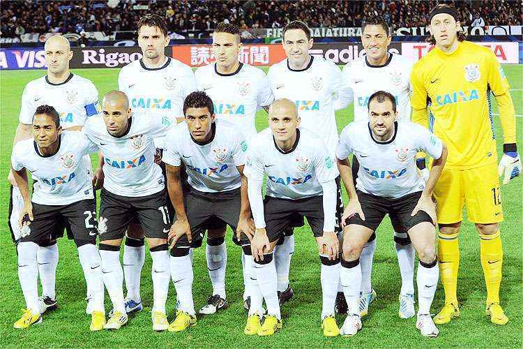
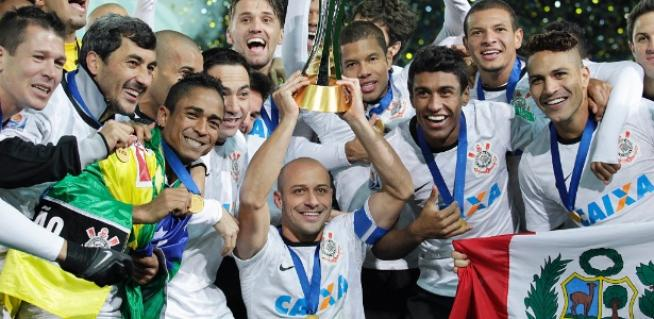
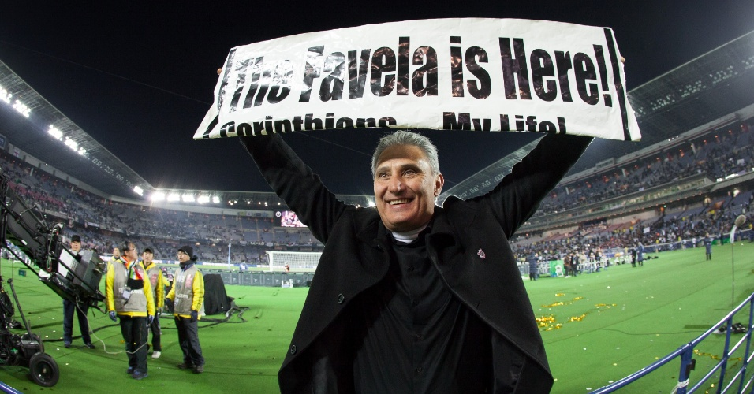

Corinthians: Campeão Mundial de Clubes da FIFA 2012



Previous
Next
Timão eternizado como último sul-americano campeão mundial!
Desde 2012, não houve mais nenhum sul-americano campeão desde então.
Go somewhere